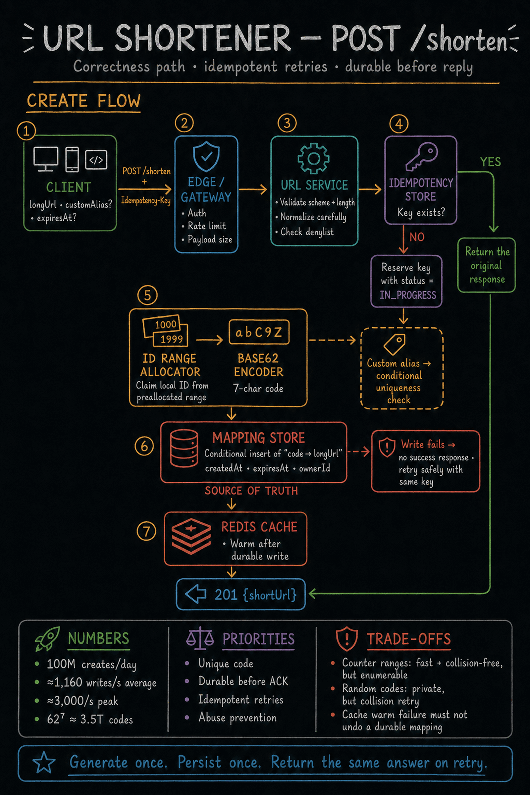

https://frosty110.github.io/js-drill/assets/system-design/infographics/design-problems/p01/create-flow.pngA service (like TinyURL / bit.ly) that maps a long URL to a short unique code and redirects on lookup. The signature challenge is generating short, unique, collision-free codes at write scale while serving an extremely read-heavy redirect workload cheaply.
All questions, model answers and diagrams for Design a URL Shortener →